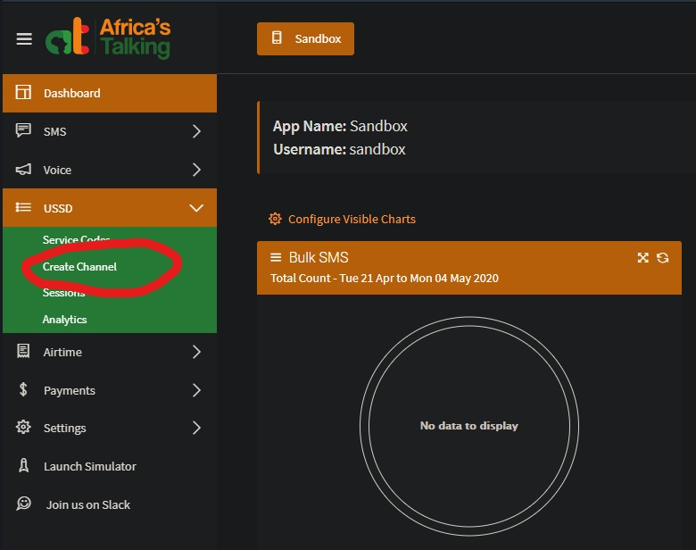
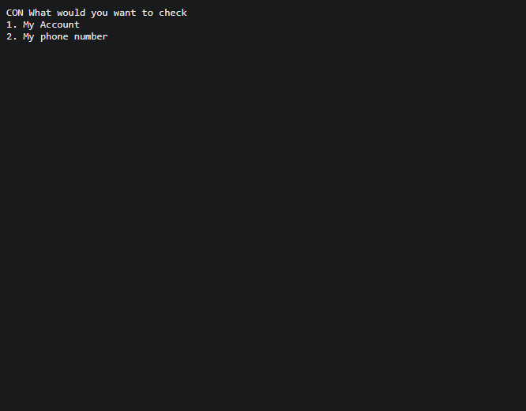
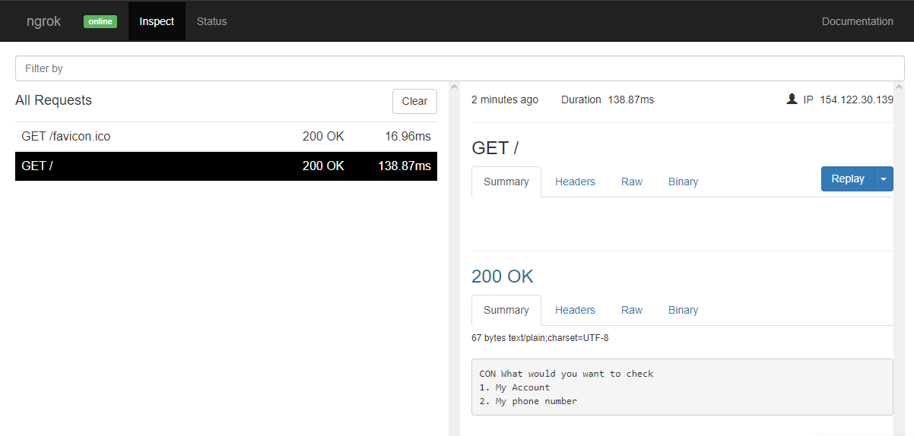

SETTING UP A USSD APPLICATION USING AFRICA'S TALKING APIs
Prerequisites
- A stable internet connection.
- Go through the USSD documentation provided by Africa's Talking to have an idea as to how it works here.
- An Africa's Talking account is required. In case you do not have one, create it by following this link.
- A installation of PHP 7 or higher.
- Ngrok- This is a tunneling application that will expose our USSD application from the local server to the internet. Download here and set up an account.
Introduction
The aim of this documentation is to guide you on how to test a USSD application using Africa's Talking sandbox by dialling the code you will create on the launch simulator.
Note: Interaction with your application will take place only on the SIMULATOR and not your PERSONAL MOBILE PHONE.
Step-by-step guide
- On your terminal, navigate to the location you want your project hosted and create a folder titled ussd.
- Create a file inside the folder labelled ussd.php .
- Inside the file, place the USSD sample code provided by Africa's Talking. Get it from here.
Tip: Click on the text labelled to reveal the code .
- Now, log onto your Africa's Talking account and click on the area marked in red as shown. This will lead you to the dashboard where we will create our channel from.
- Navigate to the USSD dropdown menu and click on
create channel, e.g.
*384*7899#.

- Set the php folder you've installed onto the PATH system environment variable depending on where it's installed on your system.
Tip: To confirm if the addition has been successful, check for the php version installed by doing php -v on your terminal.
- Assuming that you are on your root folder, on your terminal do
php -S localhost:8050 ussd.php .
This means that we are exposing our app that is located on our local server to port 8050. You should be able to see the result below:
- Next, on your Ngrok command line, do
ngrok http 8050.
You should be able to see the ouput as shown:

Note: Africa's Talking APIs are accessible on the web through HTTP/HTTPS.
- Copy and paste the http link provided onto the input area branded callback URL on your Africa's Talking account. This will serve as your callback URL. You can use the https link as well.
- Next, type
localhost:4040
on your browser. Click on the link that coincides with your callback URL.
The outcome below is what should be displayed:
 - Let's test our app! But before that...let's inspect what is on display on localhost:4040...

Tip: localhost:4040 allows us to inspect HTTP traffic running over our tunnel (the callback URL) and provides a response in the form of a status code that is dependent whether or not our API has successfully executed a client request. 200(OK) means that the request has been accomplished.
Click on the lauch simulator menu item. Key in your phone number and click launch.
This is the outcome that should be displayed:

- Play around with the app to see if it returns the desired outcomes.
Let us create a callback URL using the following steps. The URL is supposed to expose our app that is on our local server to the web so that we can POST data to it. This is where Ngrok comes in. But first...
Almost done :)
It works! :)
That's it! I hope you learnt something new today!